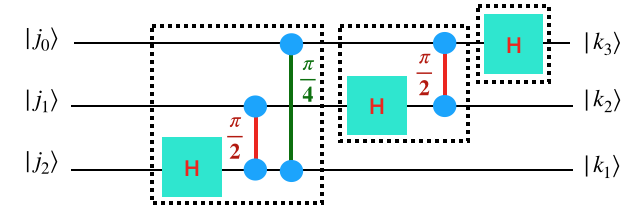
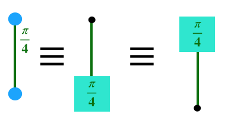
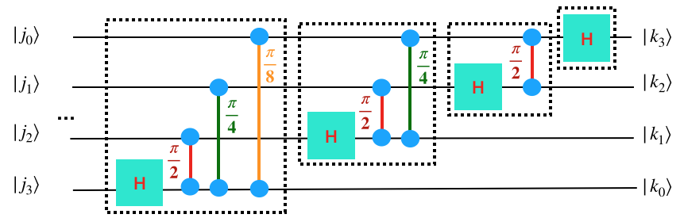

Quantum Fourier Transform
Contents
Quantum Fourier Transform#
References#
Lecture notes on Quantum Fourier Transform by Dave Bacon from the University of Washington.
Wikipedia article on the Quantum Fourier Transform.
Minimal Background#
The quantum fourier transform is useful because it takes a quantum state and allows us to convert phases to binary numbers, and vice versa. This is a useful primitive because phases will often contain information we want to access.
The quantum fourier transform should take the ket \(|j\rangle\) (which we should just think of as a binary number) to the state \(\frac{1}{\sqrt{N}}\sum_{k=0}^{N-1} \omega^{jk}|k\rangle\) where \(\omega=e^{2\pi i/N}\).
One way to think about the unitary matrix \(U_\textrm{QFT}\) is the following: Consider the matrix element \(\langle k | U_\textrm{QFT} |j \rangle\), a number which tells us how much the state for input binary number \(j\) contributes to the state for output binary number \(k\). To make our circuit work, we must ensure that every time the input is binary number \(j\) and the output is binary number \(k\), the input picks up a phase \(\omega^{jk}\). Notice that this is just a phase!
Useful Fact
You may found the following facts useful:
You can think of the product of \(jk\) in the following way: \(j = j_2 2^2+j_1 2^1 + j_0 2^0\) \(k = k_2 2^2+ k_1 2^1 + k_0 2^0\) So \(jk=(j_2+k_2)2^4+(j_2+k_1)2^3+...\)
Building the quantum fourier transform circuit for your simulator#
Here is an example of a three-qubit QFT with the input represented as \(|j_2 j_1 j_0\rangle\) and output as \(|k_2 k_1 k_0\rangle\).

We’ve used a little bit of a weird notation for the controlled phase gate. 
Typically we would write the control phase like the middle picture which applies a phase gate when the control gate is 1. But notice what the phase gate does: it applies the phase only if the phase wire is 1. What this means is that the control-phase gate rotates the phase if both wires are 1 (and does nothing otherwise). We’ve drawn it like the left-hand side of the picture above to emphasize that there is no orientation.
Comment 1: For the quantum fourier transform input is upside down while the output is right-side up. You’d typically expect that the least significant bit to be at the bottom. Therefore you have to reverse the input when you get it. You can do this by making a reverse gate before you run your QFT by swapping all the bits around.
Comment 2: This circuit uses controlled-phase gates. You will need to convert them into something your simulator can use.
There are a couple additional observations to make:
each wire has a Hadamard gate.
Each wire is taking input \(|j_0 j_1 j_2\rangle\) to output \(|k_2 k_1 k_0\rangle\) where \(k\) and \(j\) are written out in binary. A fruitful way to think about this is that until the Hadamard on wire \(i\), the wire is still the “input” \(j\) and after the Hadamard on wire \(i\) the wire is “output” \(k\).
Start by writing the circuit description for this circuit in your simulator and then check that it gives the same result as the unitary matrix you generated above.
3
H 2
....
....
Grading
Show that you’ve written the correct circuit description for three qubits and that it gets the correct result when you run it through your simulator. Make sure you’ve reversed the bits at the end. Paste the verification that it gets the right result into your document. One way to do this is to just build the QFT matrix another way and compare with what your description generates.
Now, for any fixed number of qubits, you could probably write out the QFT circuit by hand. But we’d like to do this in a more automated way. We’re going to use the QFT as a subroutine in various places. A general QFT looks like this (notice the pattern and the …).

Grading
Write code that takes a number of wires and produces the circuit description for that number of wires. Test it in your simulator and convince yourself it works correctly.
Paste into your document your QFT on five qubits run in the myInputState.txt file as well as the five qubit QFT description.
Edification
Sometimes you will see diagrams of the QFT that look pretty different in the order in which things are happening. Usually what’s going on is you can move around the gates in your QFT. In particular, you can always push any gates that aren’t being blocked by other gates. For example, your first \(\pi/4\) gate and your second Hadamard gate can be swapped because the first one is on wires 1 and 3 and the second one is on wire 2. Also, all the control phases can be passed by each other.
Understanding the QFT#
Nothing to the bottom of this page is graded - instead it’s here to get you to better understand why the QFT works
Here we’d like to understand why the QFT works.
First, let’s do a sanity check.
The QFT should take \(|0\rangle \rightarrow \sum_i |i\rangle\). If we look at all the control-phase gates, we see that it never happens that any of the phase gates get two “1” going through them in this case (because one half of each phase gate only sees the input). Therefore, none of the phase gate happens and it’s as if it only goes through a series of Hadamards. This checks out.
Here’s a way you can go through and convince yourself that the QFT works.
The QFT can also be written this way:
Note: In this formula, these are written out in binary. So, each \(j_m\) is really just 0 or 1.
Naively it almost looks like each wire is doing its own separate thing (since it’s just a tensor product at the end of the day). This would mean it’s completely un-entangled and should be able to be applied using single-qubit gates. Why is this not completely correct?
It’s not completely correct because the output of wire 2 depends on the input of wire 2 and 3. Therefore there must be some gates that go between things.
First understand why this gives you back the QFT from above.
Then make a circuit that consists of just one wire and does the right thing on the first wire. Verify it works.
Now, make a circuit that consists of two wires and does the right thing on the first two wire (i.e. make the second wire work). Verify that it works and double-check it doesn’t break the first wire.
Finally, make a circuit that consists of three wires and does the correct thing on all three wires.